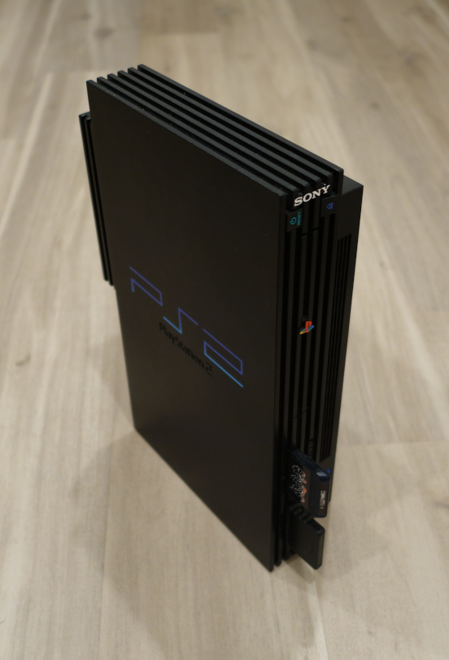

Why the PlayStation 2 Is Awesome
The irony of me changing my profile picture to an Xbox character right before making a post shilling the PS2 is uncanny. Was just thinking about the PS2 because of how much I prefer it over the Xbox.
When I was a kid (2013-ish or smth), my parents didn’t really buy new game consoles like the PS4 or the Xbox One, so when my dad got an old Xbox from someone he was working for, me and my older brother ended up using it a lot because that was all we had. I remember him playing Blinx the Time Sweeper on the Xbox and never being able to beat the final boss, and also messing around with Xbox Music Mixer… those were the only 2 games my parents had for that thing. The guy gave like 50 other games in the box but my parents donated them all because they were all rated M ;(.
Anyways, off-topic. Fast-forward to now, I honestly don’t care much for the Xbox at all, besides my attachment to Blinx (the little scrunkly). Not even the GameCube either, really. I ended up growing to become a PlayStation shill, not just PS2, but all PlayStation stuff. I even owned a PS Vita at one point. But now, all I have is a PS2 and a PSP (I’ll write a post on that later maybe).
I think for me, the first thing that stands out about the PS2 is the design of it. I like the designs of all the consoles of the 6th gen, but the PS2 is probably my favorite one. Something about the skyscraper-esque standing design of it is really cool to me, the ridges on the system, the boxy sharp design, the cool font on the PS2 logo… it all just screams “awesome” and “2000s” to me.

My PlayStation 2!
Another thing is the games too. I used to care about collecting old game systems a lot more than I do now, and bought the systems and random games for them for the sake of having them, but the only console that really lasted after that phase was the PS2. Why? Its selection of games is really good. I’m personally in it for Persona 3 and I’m willing to try out some other games I have in my colleciton, like Jak and Daxter, Metal Gear Solid, etc. I find that a lot more niche games are on the PS2 than on other systems like Xbox, or even GameCube and Dreamcast, probably because of how big the console was. My favorite games on the system are more obscure and odd games, like Parappa the Rapper 2 and Katamari Damacy… I don’t really know if they’re super obscure, but yeah, I still love them nonetheless. There’s also a lot of other bigger games that came out on PS2 that people may be more familiar with, like GTA, God of War, and other big franchises.
And honestly… yeah, that’s about it. I’m mainly in it for the games. But that’s all a game console should be for, right? I’m not out buying a game console for the fancy features or anything, I’m there for the games, and the PS2 delivers on that. Even if it’s a less powerful system.
That’s my post for the day. Glad I’m writing longer form posts now, since it doesn’t feel like I’m filling the site with bloat. Good night!
© 2022 Nick64 oh wait i dont care lol